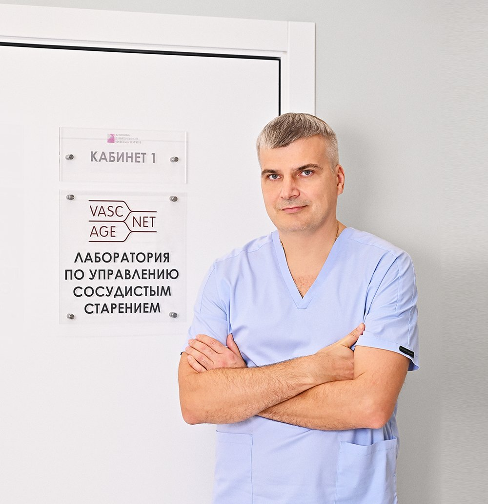
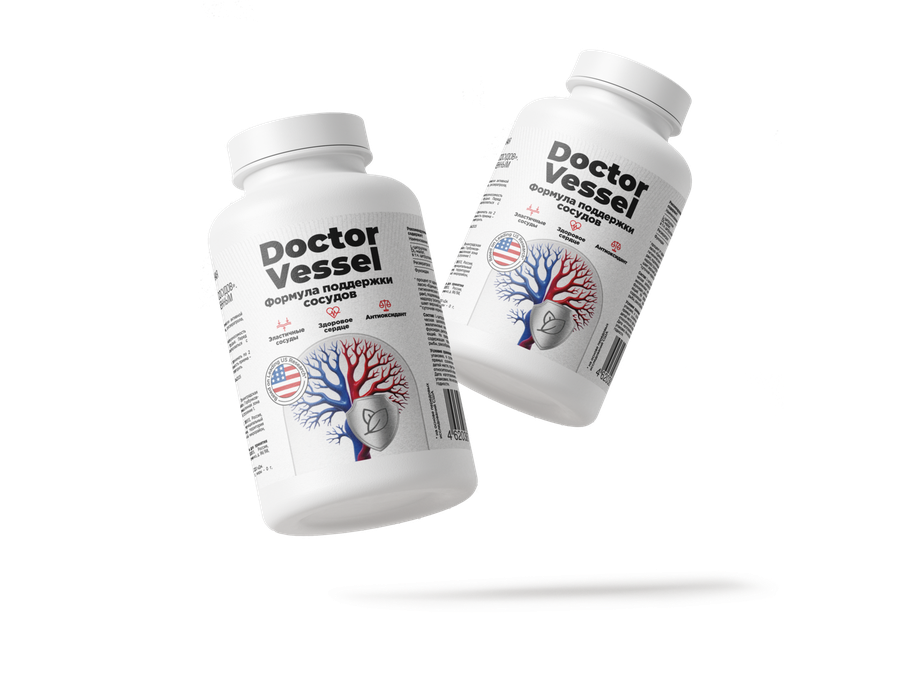

Первый в России комплекс для поддержки сосудов на всех уровнях.
Тоже есть на Wildberries и на doctorvessel.ru
Два коротких вопроса — дальше цитаты из его же роликов и первый шаг, который он сам советует. Без обещаний, что добавка вылечит.
Эти симптомы часто связаны с нарушением микроциркуляции и состоянием сосудов.
Сложно сосредоточиться, ощущение ватной головы
Даже когда вы находитесь в тепле
После нагрузок и стресса
Головные боли, слабость, скачки самочувствия
Нехватка энергии даже для простых задач
Резкое повышение или понижение
Почему нельзя обойтись одним компонентом.
Основано на самых востребованных в США формулах для поддержки эндотелия и гликокаликса.
Опрос 108 покупателей Doctor Vessel:
Результаты опроса пользователей Doctor Vessel. Результаты индивидуальны.

Или на официальном сайте doctorvessel.ru
Нет, это биологически активная добавка для поддержки сосудов.
Первые изменения многие замечают через 2–3 недели. Для устойчивого эффекта рекомендован курс от 2 месяцев.
Да, формула безопасна для длительного приёма. Рекомендуем курсами: 2 месяца приёма 2 раза в год.
Да, но при хронических заболеваниях лучше проконсультироваться с врачом.
В России, в Ленинградской области. Производство соответствует стандартам HACCP и ISO, продукт промаркирован «Честным знаком».